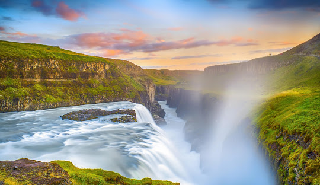

Depending on your preferences, we have the perfect package for YOU!
Attractions
- Gullfoss Falls
- Seljalandsfoss
- Jökulsárlón
- Skógafoss
- Geysir
- Goðafoss Waterfall
Beaches
- Diamond Beach
- Reynisfjara Beach
- Kirkjufjara Beach
- Fauskasandur Beach
- Skarðsvík Beach
- Ytri Tunga Beach
Museums
- The Icelandic Phallological Museum
- Perlan Museum
- National Museum of Iceland
- Whales of Iceland Museum
- Saga Museum
- Aurora Reykjavik - The Northern Lights Center